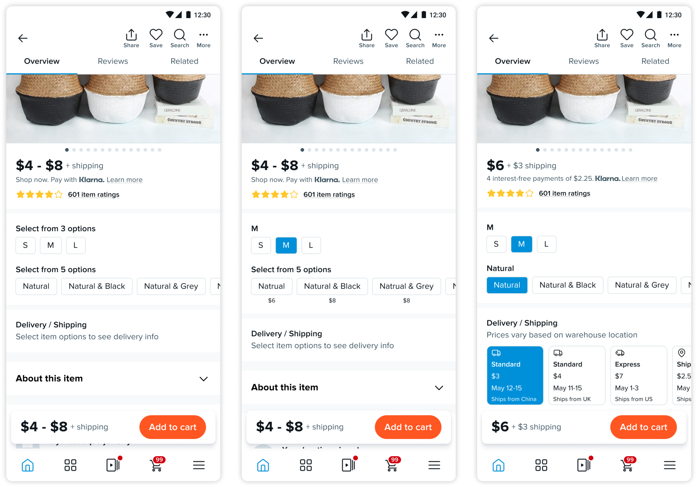
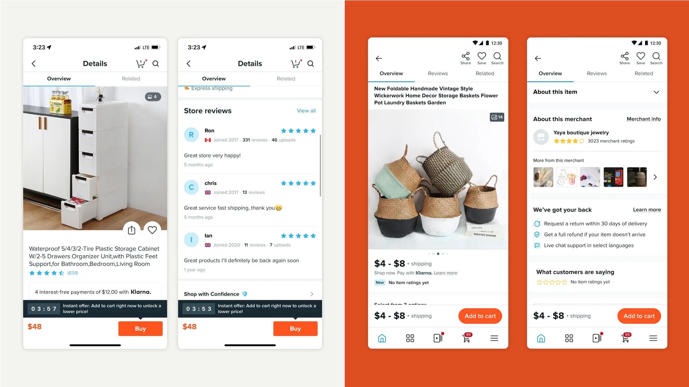

Why redesign?
The Product Details Page (PDP) is one of the most important pages for Wish’s customer journey. Because of its impact on all our major metrics, it hasn’t been changed or modified in over 4 years. We know it is problematic and doesn’t convey trust to our users. I led the redesign of this page to increase trust and transparency in the product listings.
Problem
One of the biggest threats to trust is that on average, the price initially shown on the PDP is only 40% of the real price that the customers will end up paying.
While a low upfront price can make the product more appealing and increase the click-through rate from the feed, many customers abandon their carts after seeing the actual price at checkout, leading to a high cart abandonment rate. This practice also undermines trust in our platform, as some users may perceive it as misleading or deceptive.
Solution
Build Trust & Reduce Anxiety: Establish trust of product, merchant, and overall buying experience
With the redesign, the true price will be displayed earlier in the shopping journey, eliminating any unexpected surprises for the customers. This approach ensures a more transparent and seamless shopping experience.

01
Improved transparency in every step of the selection
Customers will know the price range of every variant before they even enter the Product Detail Page (PDP). The price for each variant combination will be displayed as early as possible, right below the variant picker. Shipping costs will be shown immediately after the variant selection is completed, with the final price reflected on the Buy Bar.

02
Clearer review status for honest credibility
We also removed the logic that displayed store reviews for products without individual product reviews. Instead, we’ve introduced a 'New: No item ratings yet' message to provide a more accurate reflection of the product's review status.

Impact
The redesign addressed a critical trust gap caused by hidden costs, transforming the PDP into a transparent and modern experience. Within 3 months post-launch, the project delivered measurable impact. Overall, the redesign strengthened user trust, reduced cart abandonment, and positioned the PDP as a scalable foundation for future merchant and product initiatives.